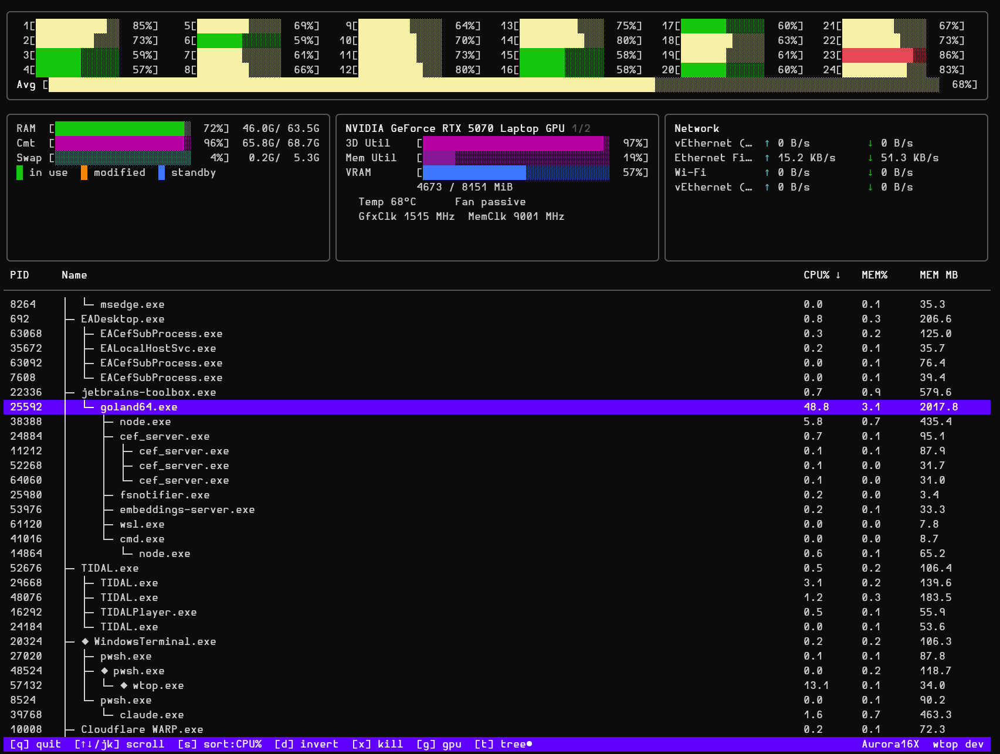

One self-contained binary, inspired by htop. CPU, memory, GPU, disk, network and processes, updated every second.
Latest stable release
winget install michaelsanford.wtop

Features
One binary, with live metrics refreshed every second.
Per-core utilisation bars in a compact grid. Colour-coded green → yellow → red as load climbs. Aggregate total always pinned at the bottom.
RAM and swap in GiB with htop-style colour layering — used, cached, and buffered pages each in a distinct colour so you know exactly where memory is going.
Automatic detection: full telemetry (util, VRAM, temp, power, clocks, fan, P-state) from NVIDIA via in-process NVML with zero subprocess overhead (falling back to DXGI, PDH, or nvidia-smi), or utilisation from AMD/Intel via PDH.
Per-interface send/receive rates in real time via direct GetIfTable2. Loopback and zero-traffic interfaces hidden automatically. Delta-per-second calculation handles clock resets cleanly.
High-performance native single-syscall Windows NT query. Top processes sortable by CPU%, memory, PID, name, or disk read/write. Toggle an htop-style tree view (t) to see full parent → child relationships with box-drawing connectors across the entire system. Kill any selected process with a confirmation step.
A ◆ marks wtop itself and the terminal session hosting it — the shells and terminal host above it — so the monitor's own cost is visible and your session is hard to kill by accident. Those processes stay pinned in the list even when idle. The chain stops below the session root: explorer.exe parents nearly everything interactive, so marking it would say nothing.
DISK R and DISK W columns show what each process is actually reading and writing, and the list sorts by either. The transfer counters arrive in the same single system call that already collects the process list, so the columns cost no additional syscalls. They appear once the terminal is 120 columns wide.
The status bar carries AC or battery state, charge, estimated time remaining and battery-saver mode, plus system uptime and the true effective CPU clock including turbo. On a desktop with no battery the power field is omitted rather than left blank. The fields thin out in priority order as the terminal narrows — the charge state is the last of them to go.
Per-physical-disk read and write throughput with a busy percentage, straight from PDH, plus a capacity bar for every fixed volume. Virtual filesystems that present themselves as fixed drives — Google Drive mirrors the system drive’s exact size — are reconciled away against the real physical disks, so no phantom copy of C: appears.
? looks the selected process up in your default browser, on whatever search engine that browser is actually set to — read out of the browser’s own profile, so a Chrome or Edge switched to DuckDuckGo searches DuckDuckGo rather than Google or Bing.
A child process is searched together with its nearest differently-named ancestor for context, so a bare msedgewebview2.exe becomes GoogleDriveFS.exe msedgewebview2.exe and you find out which application is really hosting it.
Single statically-linked binary with no installer, no runtime, and no admin rights to run. CGO-free. Just download wtop.exe and go.
Keyboard
Every action is one keypress. No mouse, no menus.
| Key | Action |
|---|---|
| ↑ / ↓ or k / j | Scroll process list |
| s | Cycle sort column — CPU% → Mem MB → PID → Name → Disk R → Disk W |
| d | Reverse sort order |
| t | Toggle tree view — htop-style parent → child with box-drawing connectors; tree● indicator appears in the status bar when active |
| g | Cycle between GPUs (when multiple are detected) |
| i | Cycle the I/O panel — GPU → Network → Disk |
| ? | Search the selected process on the web — opens your default browser on its own default search engine |
| x | Kill selected process — asks for confirmation |
| y / n / Esc | Confirm or cancel kill |
| q / Ctrl+C | Quit |
The panel row is Memory plus as many rotating panels as the terminal can hold. GPU, Network and Disk share those slots, and i pages through them.
| Terminal width | Panel row |
|---|---|
| below 110 | Memory + one rotating panel |
| 110 – 159 | Memory + two rotating panels |
| 160 and wider | Memory + all three; i is a no-op |
The process table has its own threshold: DISK R and DISK W appear at 120 columns and disappear together below it. Sorting by a hidden column still works — the status bar is the authoritative sort indicator.
Get started
Install with winget, or download a pre-built binary for amd64 and arm64. No installer, no admin rights.
winget install michaelsanford.wtop
Published to winget as michaelsanford.wtop
Or download the latest release and run it directly
# No installer needed
.\wtop-v1.0.0-windows-amd64.exe
Build from source (Go 1.27+ required)
git clone https://github.com/michaelsanford/wtop cd wtop go build -o wtop.exe ./cmd/wtop/ .\wtop.exe
Supply chain
Every release is built reproducibly in GitHub Actions and ships with a complete audit trail.
Full dependency inventory in JSON format — wtop-vX.Y.Z-sbom.cdx.json — attached to every release.
Keyless signature via Sigstore. A .bundle file ships with each binary for offline verification.
GitHub Actions attestation links each binary to its exact source commit and workflow run. Verify with gh attestation verify.
# Verify GitHub Actions build provenance gh attestation verify wtop-v1.0.0-windows-amd64.exe \ --repo michaelsanford/wtop # Verify Sigstore cosign bundle cosign verify-blob wtop-v1.0.0-windows-amd64.exe \ --bundle wtop-v1.0.0-windows-amd64.exe.bundle \ --certificate-identity-regexp "https://github.com/michaelsanford/wtop" \ --certificate-oidc-issuer https://token.actions.githubusercontent.com
Installed via winget? Verify the binary on disk in one command with Verify-Release.ps1
# Resolves the winget shim to the real binary and checks build # provenance + cosign signature; version auto-detected from `winget show`. .\Verify-Release.ps1 -WinGet # Or pin the release version explicitly: .\Verify-Release.ps1 -WinGet -Version v1.0.0
Checking prerequisites ──────────────────────────────────────────────────────────── [PASS] gh [PASS] cosign (cosign-windows-amd64) [PASS] winget Locating winget-installed michaelsanford.wtop ──────────────────────────────────────────────────────────── [PASS] michaelsanford.wtop is installed Installed version (winget list): 1.1.0.0 Auto-detected version (winget show): v1.1.0 [PASS] Binary: C:\Users\you\AppData\Local\Microsoft\WinGet\Packages\michaelsanford.wtop_Microsoft.Winget.Source_8wekyb3d8bbwe\wtop.exe Architecture: amd64 (bundle: wtop-v1.1.0-windows-amd64.exe.bundle) 1/2 GitHub Attestation (gh attestation verify) ──────────────────────────────────────────────────────────── Subject: C:\Users\you\AppData\Local\Microsoft\WinGet\Packages\michaelsanford.wtop_Microsoft.Winget.Source_8wekyb3d8bbwe\wtop.exe [PASS] Build provenance verified 2/2 Cosign Keyless Signature (cosign-windows-amd64 verify-blob) ───────────────────────────────────────────────────────────────── Certificate identity: https://github.com/michaelsanford/wtop/.github/workflows/release.yml@refs/tags/v1.1.0 OIDC issuer: https://token.actions.githubusercontent.com Downloading bundle: wtop-v1.1.0-windows-amd64.exe.bundle [PASS] Cosign signature verified Summary — v1.1.0 (winget install) ──────────────────────────────────────────────────────────── [PASS] GitHub Attestation (gh attestation verify) [PASS] Cosign Signature (cosign verify-blob) SBOM Integrity (skipped — not installed by winget) winget-installed wtop v1.1.0 passed all verification checks.